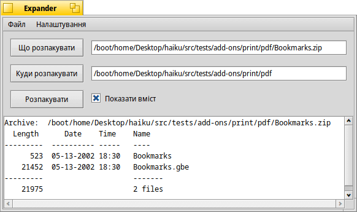
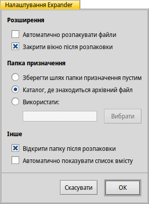

Expander (Екстрактор)
| Deskbar: | У меню не входить, запускається подвійним кліком на файлі архіву. | |
| Розташування: | /boot/system/apps/Expander | |
| Налаштування: | ~/config/settings/Expander_Settings |
Expander (Екстрактор) – це невеликий інструмент для швидкого розпакування найпоширеніших архівів, серед яких zip, gzip, bzip2, rar і tar.gz.
Просто зробіть подвійний клік на архіві, щоб побачити цей простий інтерфейс:

| ALT O | відкриває файловий діалог, щоб визначити архів для розпакування. | |
| ALT D | відкриває файловий діалог, щоб визначити де будуть міститися розпаковані файли. | |
| ALT E | розпочинає процес розпакування. Його можна перервати за допомогою комбінації клавіш ALT K. |
Ви можете відобразити чи приховати список файлів, знявши/встановивши позначку чекбокса або натиснувши комбінацію клавіш ALT L.
Expander може розпаковувати лише цілі архіви, цілком.
Ви не можете вибирати окремі файли для розпакування або додавати/видаляти файли з архіву.
Ви не можете вибирати окремі файли для розпакування або додавати/видаляти файли з архіву.
Пункт меню або комбінація клавіш ALT S відкриває панель налаштувань, яка пропонує деякі корисні настройки для управління поведінкою програми Expander.
Усі параметри і опції зрозумілі за визначенням:
